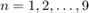

Lab 8 Solution
Lab Instructor: Valeria Barra
Contents
- Problem 1: Numerical Differentiation - First Order Forward Derivative VS First Order Centered Derivative
- Problem 2: Numerical Differentiation - Centered VS Truncated Derivative
Called Functions
DUE Tuesday 03-22-2016
Problem 1: Numerical Differentiation - First Order Forward Derivative VS First Order Centered Derivative
Use the first order forward and centered finite difference scheme to approximate the first derivative of the function at the point , with , with . Write your results and errors in a table to compare the order of accuracy of the two schemes.
Solution:
clear all; clc; close all; syms x; f=exp(x); x0=0; h=10.^-(1:9); FirstDiffExact=diff(f); FirstDiffEval=double(subs(FirstDiffExact,0)); fprintf('_________________________________________________Problem 1 Table________________________________________________________________________________\n\n') fprintf(' %s %s %s %s %s %s %s \n','h','D_f(f)','Err D_f(f)','D_c(f)','Err D_c(f)','Ratio Err_D_f(f)','Ratio Err_D_c(f)') fprintf('________________________________________________________________________________________________________________________________________________\n\n') for i=1:length(h) DFirstForward(i)=FirstForwardDiff(f,x,x0,h(i)); DFirstCentered(i)=FirstCenteredDiff(f,x,x0,h(i)); ErrorForward(i)=abs(FirstDiffEval - (DFirstForward(i))); ErrorCentered(i)=abs(FirstDiffEval -(DFirstCentered(i))); if i>=2 RatioForward(i-1)=ErrorForward(i)/ErrorForward(i-1); RatioCentered(i-1)=ErrorCentered(i)/ErrorCentered(i-1); fprintf(' %2.0e %16.14f %16.14f %16.14f %16.14f % 8.2g % 8.2g \n',h(i),(DFirstForward(i)),ErrorForward(i),(DFirstCentered(i)),ErrorCentered(i),RatioForward(i-1),RatioCentered(i-1) ); else fprintf(' %2.0e %16.14f %16.14f %16.14f %16.14f \n',h(i),(DFirstForward(i)),ErrorForward(i),(DFirstCentered(i)),ErrorCentered(i)); end end fprintf('________________________________________________________________________________________________________________________________________________\n\n\n')
_________________________________________________Problem 1 Table________________________________________________________________________________
h D_f(f) Err D_f(f) D_c(f) Err D_c(f) Ratio Err_D_f(f) Ratio Err_D_c(f)
________________________________________________________________________________________________________________________________________________
1e-01 1.05170918075648 0.05170918075648 1.00166750019844 0.00166750019844
1e-02 1.00501670841679 0.00501670841679 1.00001666674999 0.00001666674999 0.097 0.01
1e-03 1.00050016670838 0.00050016670838 1.00000016666668 0.00000016666668 0.1 0.01
1e-04 1.00005000166714 0.00005000166714 1.00000000166689 0.00000000166689 0.1 0.01
1e-05 1.00000500000696 0.00000500000696 1.00000000001210 0.00000000001210 0.1 0.0073
1e-06 1.00000049996218 0.00000049996218 0.99999999997324 0.00000000002676 0.1 2.2
1e-07 1.00000004943368 0.00000004943368 0.99999999947364 0.00000000052636 0.099 20
1e-08 0.99999999392253 0.00000000607747 0.99999999392253 0.00000000607747 0.12 12
1e-09 1.00000008274037 0.00000008274037 1.00000002722922 0.00000002722922 14 4.5
________________________________________________________________________________________________________________________________________________
Conclusions: We can see that the centered derivative is more accurate than the forward one (second order of accuracy vs first). Since we divide h by ten, we can see that the error ratio is roughly 0.1 for the first order scheme (i. e. the error also is divided by ten), while it is roughly 0.01 for the second order scheme. These ratios eventually blow up for small values of h due to h being to small (dividing approximately by zero propagates the error)
Problem 2: Numerical Differentiation - Centered VS Truncated Derivative
Use the centered finite difference scheme to approximate the second derivative of the function at the point , with , with . Do the same with a truncated version of the evaluations of the function , up to 6 digits of precision. Write your results and errors in a table and compare the exact evaluations and the truncated ones.
Solution:
syms x; f=cos(x); x0=pi/6; den=(2.^(1:9)); h=1./den; CenteredDiffExact=diff(f,2); CenteredDiffEval=double(subs(CenteredDiffExact,pi/6)); fprintf('_____________________________________________Problem 2 Table_______________________________________________________________________________\n\n') fprintf(' %s %s %s %s %s %s %s \n','h','D_c^2(f)','D_c^2(hat(f))','Err D_c^2(f)','Err D_c^2(hat(f))','Ratio Err_E','Ratio Err_Tr') fprintf('___________________________________________________________________________________________________________________________________________\n\n') for i=1:length(h) D(i)=SecondCenteredDiff(f,x0,h(i)); DRound(i)=SecondCenteredDiffRoundedOff(f,x0,h(i)); ErrorExact(i)=abs(CenteredDiffEval - (D(i))); ErrorRound(i)=abs(CenteredDiffEval - (DRound(i))); if i>=2 RatioExact(i-1)=ErrorExact(i)/ErrorExact(i-1); RatioRound(i-1)=ErrorRound(i)/ErrorRound(i-1); fprintf(' %3.0i / %3.0i %16.14f %16.14f %16.14f %16.14f % 8.2g % 8.2g \n',1,den(i),(D(i)),(DRound(i)),ErrorExact(i),(ErrorRound(i)),RatioExact(i-1),(RatioRound(i-1)) ); else fprintf(' %3.0i / %3.0i %16.14f %16.14f %16.14f %16.14f \n',1,den(i),(D(i)),(DRound(i)),ErrorExact(i),(ErrorRound(i))); end end fprintf('___________________________________________________________________________________________________________________________________________\n\n\n') % plotting here line_fewer_markers(h,ErrorExact,5,'o-.r','MarkerFaceColor','r','MarkerSize',6,'LineWidth',1.5); hold on line_fewer_markers(h,ErrorRound,8,'p--','MarkerSize',10,'MarkerFaceColor','b','LineWidth',1.5); legend({'Error of Exact Evaluation','Error of Rounded Evaluation'}); title('Problem 2: Errors vs h'); box on; xlabel('h'); ylabel('Error');
_____________________________________________Problem 2 Table_______________________________________________________________________________
h D_c^2(f) D_c^2(hat(f)) Err D_c^2(f) Err D_c^2(hat(f)) Ratio Err_E Ratio Err_Tr
___________________________________________________________________________________________________________________________________________
1 / 2 -0.84813289015317 -0.84812800000000 0.01789251363127 0.01789740378444
1 / 4 -0.86152424130301 -0.86150400000000 0.00450116248143 0.00452140378444 0.25 0.25
1 / 8 -0.86489835368714 -0.86483200000001 0.00112705009730 0.00119340378443 0.25 0.26
1 / 16 -0.86574353117766 -0.86553600000002 0.00028187260678 0.00048940378442 0.25 0.41
1 / 32 -0.86595492875063 -0.86528000000010 0.00007047503381 0.00074540378434 0.25 1.5
1 / 64 -0.86600778459524 -0.86016000000063 0.00001761918920 0.00586540378381 0.25 7.9
1 / 128 -0.86602099895754 -0.85196800000085 0.00000440482690 0.01405740378359 0.25 2.4
1 / 256 -0.86602430256607 -0.78643200000806 0.00000110121836 0.07959340377638 0.25 5.7
1 / 512 -0.86602512843092 -0.78643200002261 0.00000027535352 0.07959340376182 0.25 1
___________________________________________________________________________________________________________________________________________
Conclusions: We can see how with the truncated version of the function, the round off errors affect the accuracy of the calculation of the second derivative. In fact, while the error for exact evaluated decreases as h decreases, the one for the truncated one decreases initially but then after a certain treshold, increases rapidly, giving a less accurate result.